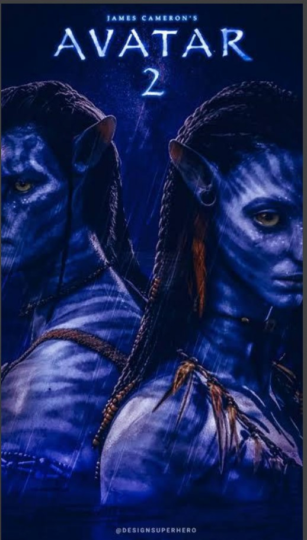
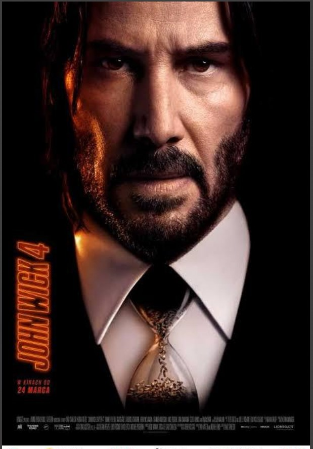

John Wick: Chapter 4 is a 2023 American neo-noir action thriller film directed by Chad Stahelski and written by Shay Hatten and Michael Finch. The sequel to John Wick: Chapter 3 – Parabellum (2019) and the fourth installment in the John Wick franchise, it stars Keanu Reeves as the title character, alongside Donnie Yen, Bill Skarsgård, Laurence Fishburne, Hiroyuki Sanada, Shamier
When Anastasia Steele, a literature student, goes to interview the wealthy Christian Grey as a favor to her roommate Kate Kavanagh, she encounters a beautiful, brilliant and intimidating man. The innocent and naive Ana starts to realize she wants him. Despite his enigmatic reserve and advice, she finds herself desperate to get close to him. Not abl...

Avatar: The Way of Water is a 2022 American epic science fiction film directed and produced by James Cameron. He co-wrote the screenplay with Rick Jaffa and Amanda Silver from a story the trio wrote with Josh Friedman and Shane Salerno. Distributed by 20th Century Studios, it is the sequel to Avatar (2009) and the second installment in the Avatar film series. Cast members Sam Worthington